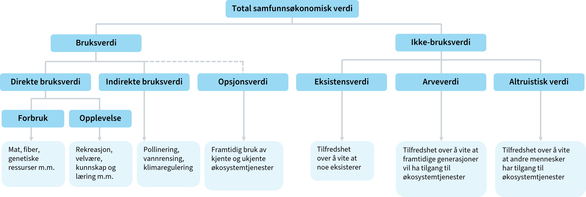

Folk vil ofte ikke oppgi korrekte svar på hypotetiske valg
Bruk av fageksperter for å verdsette virkninger
Bedre til å vurdere sannsynligheter
Samme metoder for å avdekke preferanser kan brukes på eksperter
Ekspertvurdering vil ikke alltid samsvare med publikums egne preferanser
Brukes til å lage scenarioer for betinget verdsetting og valgeksperimenter
Miljøvirkninger

Miljøverdi
Miljøverdi kan være vanskelig å verdsette, spesielt ikke-bruksverdi
Respondenter har ikke erfaring med å velge tilgangen eller kvalitet
Verdioverføringer fra tidligere gjennomførte studier
forutsetter høy kvalitet på underliggende verdsettingsstudier
Kostnadsbasert verdsettelse
Beregne hva det vil koste å unngå eller avbøte tapet av et miljøgode
F.eks. støyisolering
Vurdering av usikkerhet kan grovt sett bestå av disse fire stegene:
kartlegg usikkerhetsfaktorene
klassifiser usikkerhetsfaktorene
gjennomfør usikkerhetsanalyse
vurder risikoreduserende tiltak
Husk at usikkerhet allerede kan ha blitt tatt høyde for
Tiltak med høy risiko eller umoden teknologi kan ha blitt forkastet når relevante tiltak ble valg ut i arbeidsfase 2
Forventningsverdien tar hensyn til ulike sannsynligheter for ulike utfall
Kalkulasjonsrenten tar hensyn til risiko
Ulike typer av usikkerhet
Tiltaks- og prosjektinterne forhold:
Usikkerhet knyttet til gjennomføringen og prosjektering.
Hendelsesusikkerhet:
Uforutsette hendelser for dette prosjektet (“usystematisk risiko”)
Generell usikkerhet:
Generell risiko (“markedsrisiko”)
Ulike typer usikkerhetsanalyse
Følsomhetsanalyser
Pessimistisk verdi (P15)
Forventet verdi (P50)
Optimistisk verdi (P85)
Forventet investeringskostnad (mill. kr)
300
125
50
Netto nåverdi (mill. kr)
-47
128
203
Mer avanserte usikkerhetsanalyser
scenarioanalyser
Utvidelse av følsomhetsanalyse
Flere parameter endres samtidig
simuleringer
Monte Carlo
Monte Carlo
import numpy as npimport matplotlib.pyplot as plt# Function to calculate NPVdef net_present_value(inv, traveltime, persons, value_per_hour, reduced_accident, maintenance, lifetime, discount_rate):# Calculate annual time savings benefit time_saving = traveltime * persons *365* value_per_hour# Total annual benefits annual_benefits = time_saving + reduced_accident # Net benefits each year (benefits - maintenance costs) net_benefits_per_year = annual_benefits - maintenance# Calculate NPV of the benefits over the bridge's lifetime npv_benefits =sum(net_benefits_per_year / (1+ discount_rate) ** year for year inrange(1, lifetime +1))# Calculate total NPV (subtracting the initial investment) total_npv = npv_benefits - invreturn total_npv# Define the number of simulationsnum_simulations =10000# Random value ranges for each parameterinv_values = np.random.uniform(30e6, 70e6, num_simulations) # Investment cost in NOK (30M to 70M)traveltime_values = np.random.uniform(0.2, 1.0, num_simulations) # Travel time saved per person (hours)persons_values = np.random.uniform(5000, 15000, num_simulations) # Number of people using the bridge dailyvalue_per_hour_values = np.random.uniform(50, 150, num_simulations) # Value of time saved (NOK per hour)reduced_accident_values = np.random.uniform(100000, 1000000, num_simulations) # Accident reduction savings per year (NOK)maintenance_values = np.random.uniform(200000, 500000, num_simulations) # Maintenance cost per year (NOK)# Fixed parameterslifetime_years =30# Lifetime of the bridge in yearsdiscount_rate =0.03# 3% discount rate# Run simulationsnpv_results = []for i inrange(num_simulations): npv = net_present_value(inv=inv_values[i], traveltime=traveltime_values[i], persons=persons_values[i], value_per_hour=value_per_hour_values[i], reduced_accident=reduced_accident_values[i], maintenance=maintenance_values[i], lifetime=lifetime_years, discount_rate=discount_rate) npv_results.append(npv)# Plotting the distribution of NPV outcomesplt.figure(figsize=(10,6))plt.hist(npv_results, bins=50, edgecolor='black', alpha=0.7)plt.title('Distribution of Net Present Value (NPV) Outcomes')plt.xlabel('Net Present Value (NOK)')plt.ylabel('Frequency')plt.grid(True)plt.show()
Risikoreduserende tiltak
forebygge avvik fra forventningsverdien
planlegge for å begrense konsekvensene av avvik eller uheldige hendelser
Realopsjoner
Det er betydelige (irreversible) kostnader forbundet med å komme tilbake til utgangspunktet
Det er sannsynlig at man senere får ny informasjon som gir god støtte i beslutningsprosessen.
Det er handlingsrom når man på et senere tidspunkt skal ta en ny beslutning om tiltak.
Forskjellige typer realopsjoner
Utsatt beslutning
Trinnvis utbygging
Innbygd fleksibilitet
Avslutning av tiltak
Fordelingsvirkninger
Skal ikke foretas fordelingsvekting i selve nåverdianalysen
Tas med i tilleggsanalyse
Der det er relevant skal det gis tilleggsinformasjon om fordelingsvirkninger
Økt sysselsetting i én region på bekostning av færre sysselsatte i en annen, er en fordelingsvirkning - ikke en ringvirkning
Nyttig for beslutningstaker
Fordeling kan av og til være hovedformålet med tiltaket
En kan da for eksempel sammenligne NV til ulike alternative måter å oppnå en bestemt fordeling
Vurder om det finnes kompenserende alternativer
Hvilke fordelingsvirkninger er relevante?
geografiske regioner i Norge
offentlige virksomheter
privat næringsliv
privatpersoner
brukere og ikke-brukere av et offentlig tiltak
Hvilke fordelingsvirkninger er relevante?
sosioøkonomiske grupper, inndelt etter for eksempel
inntektsnivå
sivil status
alder
barnefamilier
funksjonsevne
sykdomsgruppe
yrkesgrupper
forskjellige generasjoner
kjønn
Eksempel på fordelingsanalyse:
Tiltak forventes å gi et samfunnsøkonomisk overskudd på 250 mill.